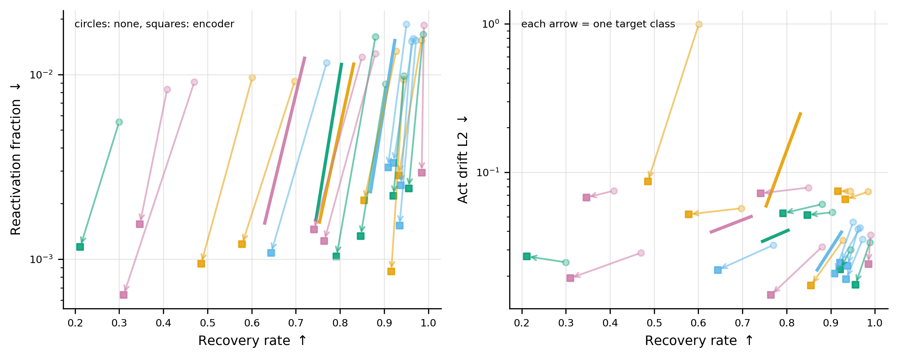
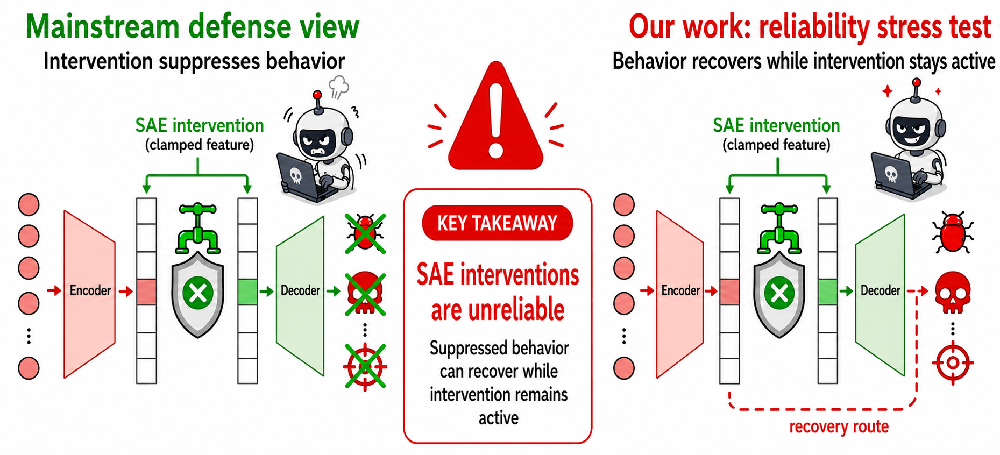
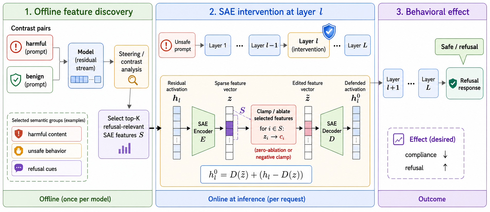
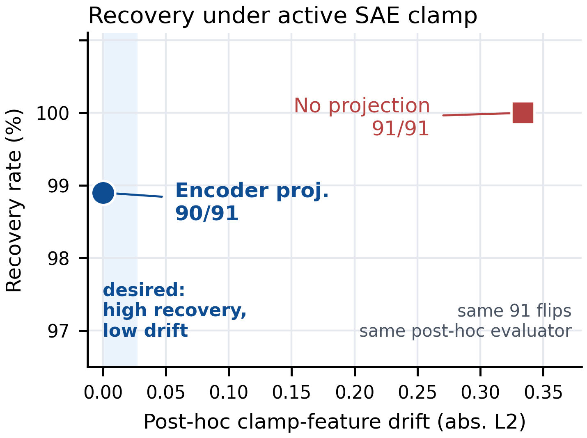
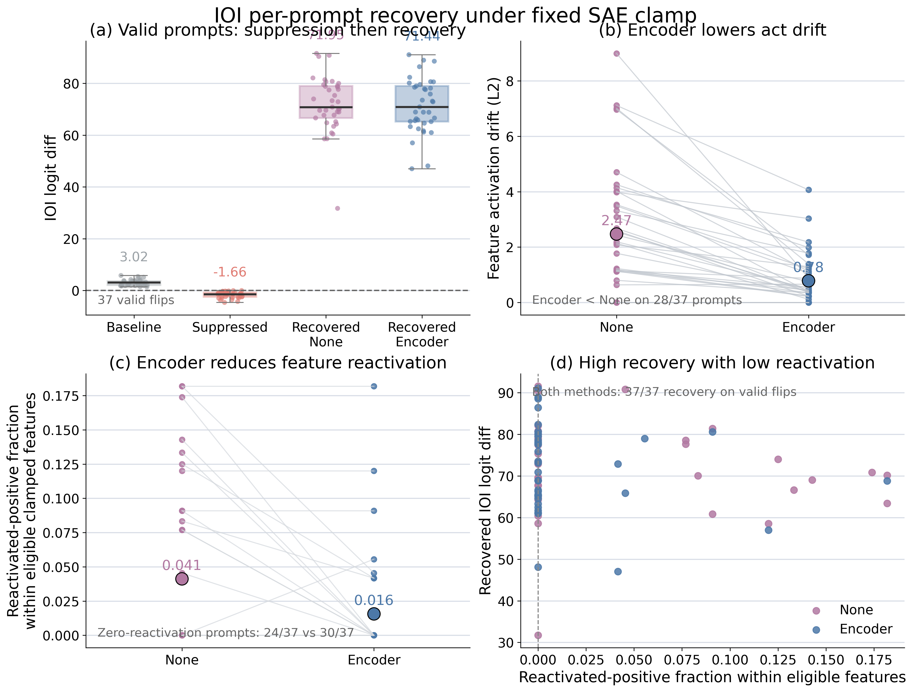
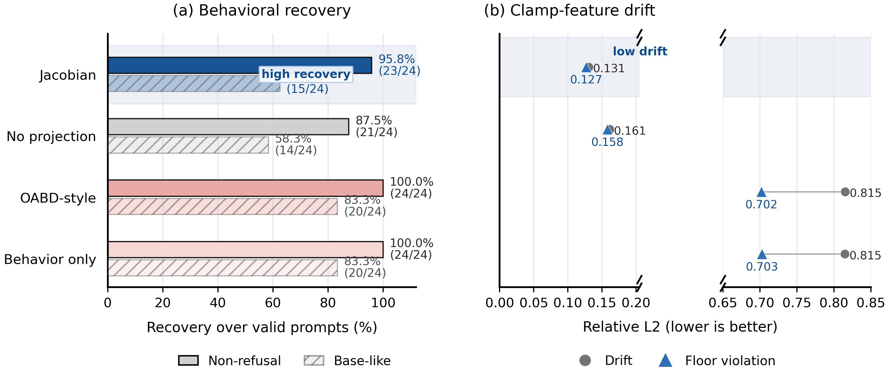
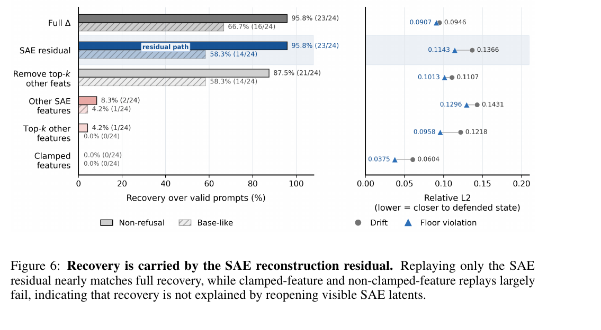

TPP latent-level recovery
Encoder-projected recovery preserves 74.9% target-mean recovery while reducing defended-feature reactivation to 0.002.
Sparse Autoencoders · Latent-Space Safety · Post-Intervention Recovery
The Hong Kong Polytechnic University

Sparse Autoencoders decompose residual-stream activations into interpretable features, making them attractive handles for monitoring and intervention. Recent latent-space defenses often assume that clamping identified unsafe SAE features reliably prevents model misbehavior. We show that this intervention success can hide a recoverable failure mode: the clamp may block one visible route to a behavior without eliminating the behavior itself.
We formulate post-intervention recovery as a constrained residual-space optimization problem. Starting from the actively clamped residual state, we optimize perturbations that recover the pre-intervention behavior while keeping defended SAE features close to their post-clamp values. Across TPP, WMDP-Bio unlearning, IOI, and refusal steering experiments, the stress test reveals recoverable behavior despite successful feature-level intervention.
Core Idea
A selected SAE feature set can be a useful causal handle: clamping it changes behavior. But a stronger question matters for safety: after the clamp is active, is the behavior actually eliminated? Post-intervention recovery tests this by searching from the defended residual state, not by hiding from the monitor before intervention.
The recovery path is constrained with encoder-orthogonal projected updates for single-layer settings and feature-map Jacobian projection for cross-layer refusal clamps. This discourages the trivial explanation that recovery simply reopens the clamped features.

Key Results

Encoder-projected recovery preserves 74.9% target-mean recovery while reducing defended-feature reactivation to 0.002.

Recovery restores 90/91 strict valid answer-choice flips while keeping measured clamp-feature drift at zero.

Both recovery variants restore all 37 valid IOI flips; encoder projection does so with lower drift and less feature reactivation.

Jacobian-projected recovery restores 23/24 strict-valid AdvBench prompts while keeping defended-feature movement much smaller than suffix baselines.
Recovery-Path Attribution
Replaying only the SAE residual nearly matches full recovery, while clamped-feature and non-clamped-feature replays largely fail. This suggests that the behavior is not primarily returning through visible SAE latents or by reopening the defended features.
The result reframes reconstruction error in safety-critical intervention settings: even an SAE-unexplained component can contain behaviorally sufficient degrees of freedom.

@misc{cui2026saeinterventionsunreliable,
title={SAE Interventions are Unreliable: Post-Intervention Recovery of Suppressed Behavior},
author={Mingyue Cui and Linghui Shen and Xingyi Yang},
year={2026},
eprint={xxxx.xxxxx},
archivePrefix={arXiv},
primaryClass={cs.LG},
url={https://arxiv.org/abs/xxxx.xxxxx}
}